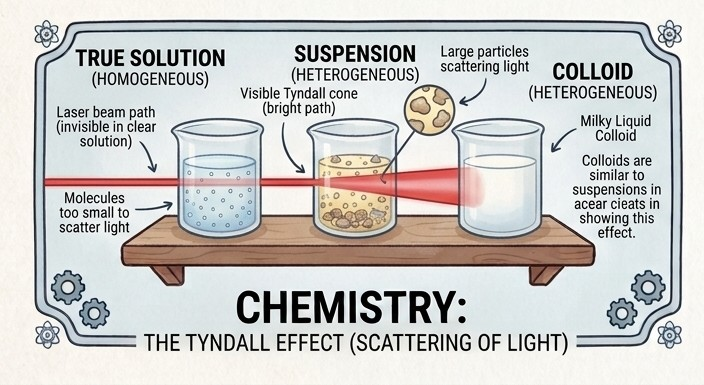

🧪 ChemistryExploring matter, mixtures, and the chemistry of everyday life.
Types of Mixtures
A journey through True Solutions, Suspensions, and Colloids
Chemistry is all around us. The salt in our food, the milk we drink, and the muddy water we see after rain are all examples of mixtures.
But do all mixtures behave in the same way? Can we tell them apart using a beam of light?

This project explores three types of mixtures—true solutions, suspensions, and colloids—and uses the Tyndall effect to understand how their particles behave.
💡 What Is the Tyndall Effect? When a beam of light passes through a mixture, its particles may scatter the light. If the path of the beam becomes visible, this is called the Tyndall effect.
In simple words: The Tyndall effect helps us see how certain tiny particles scatter light.
🔬 The Three Types of Mixtures 1. True Solution
A true solution is a homogeneous mixture in which the particles are extremely small. They do not settle down and do not scatter light.
Example: Salt water 2. Suspension
A suspension is a heterogeneous mixture containing large particles. These particles settle down when the mixture is left undisturbed and can be separated by filtration.
Example: Muddy water 3. Colloid>
A colloid contains particles that are larger than those in a true solution but small enough to remain dispersed. These particles scatter light and show the Tyndall effect.
Example: Milk
🎯 Aim of the Experiment
To study and differentiate between true solutions, suspensions, and colloids by observing their properties and the Tyndall effect.
🧪 Materials Required
Salt water • Milk • Muddy water • Beakers • Torch or laser • Filter paper
🔍 What Do We Observe?
True solution: The path of light is not visible and particles do not settle. Suspension: Particles are visible, settle down, and can be filtered. Colloid: Particles remain dispersed and the path of light becomes visible due to the Tyndall effect.
✅ Conclusion The experiment shows that mixtures differ in particle size, settling behaviour, and ability to scatter light. A true solution does not show the Tyndall effect, while a colloid does. Suspensions contain larger particles that settle down when left undisturbed.